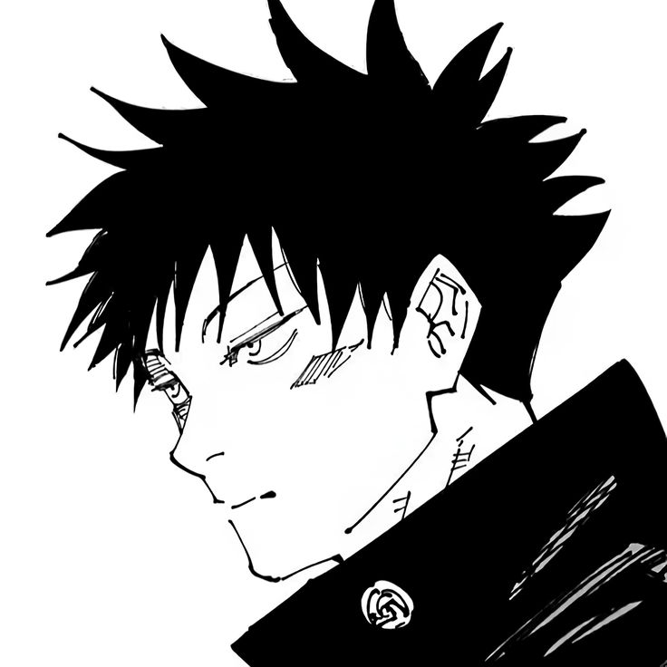

O Megumi foi apresentado como um personagem misterioso e reservado, dando indicíos que era uma pessoa fria, mas conforme a história avança, consigo desenvolver apego ao personagem. Ele demonstra preocupação pelo Itadori e a Nobara, mesmo que ele não demonstre isso de forma tão clara, ele se importa muito com os amigos dele, ele é um personagem muito complexo, ele tem um passado difícil e isso o torna mais humano. Ele sendo amigo do itadori já basta para eu gostar dele.